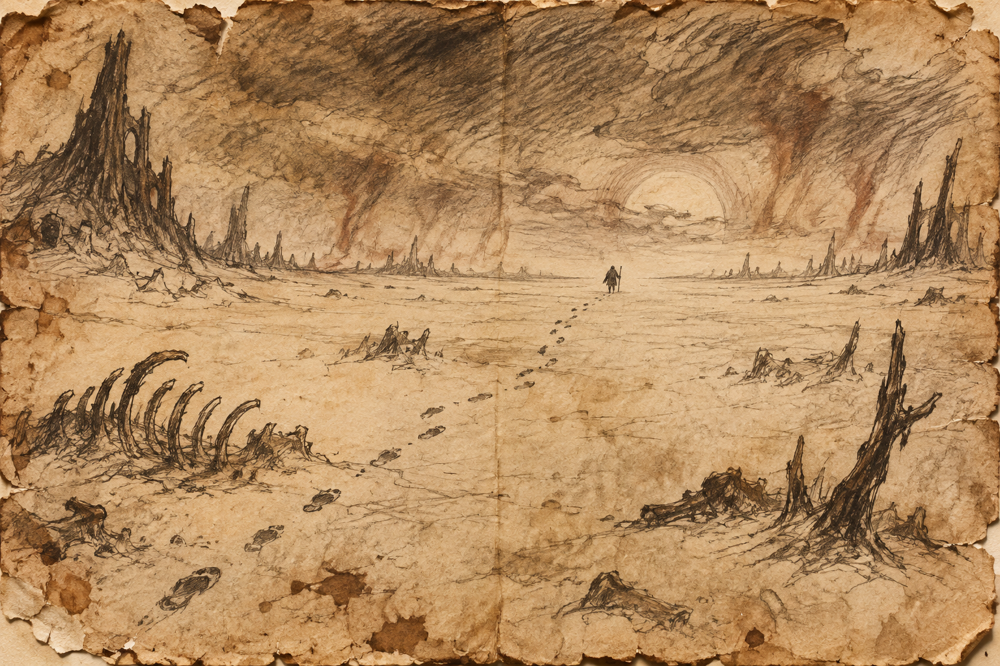

The empty country
The ground is soft pale dust, unbroken by furnaces, cells, or instruments of judgment. Light hangs without a sun. Footprints remain until their maker stops looking back to check whether anyone is following.
A pale expanse where no punishment arrives. Those who cross it learn what they wanted punishment to explain.

The ground is soft pale dust, unbroken by furnaces, cells, or instruments of judgment. Light hangs without a sun. Footprints remain until their maker stops looking back to check whether anyone is following.
Travelers first ask when their sentence will begin. Then they bargain for a task, a pain, a voice that will tell them what the suffering means. The Wastes supply none. Here, guilt cannot be paid away through endurance, and innocence needs no performance.
Water appears in shallow hollows without a price or explanation. Shelters have room for whoever arrives next. A route emerges when a traveler does something kind without treating it as evidence in a case for release.